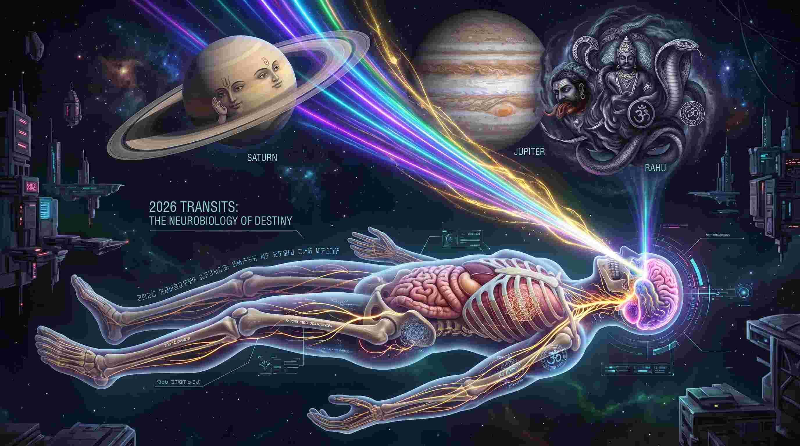
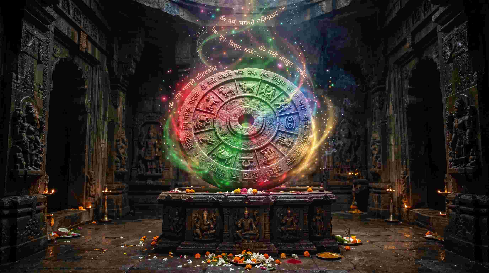

जब एक वर्ष समाप्त होता है और नया वर्ष शुरू होता है, तो हर व्यक्ति के मन में एक ही सवाल होता है— "यह नया साल मेरे बैंक बैलेंस, मेरे स्वास्थ्य और मेरे करियर के लिए कैसा रहेगा?"
एक मेडिकल छात्र और वैदिक ज्योतिषी होने के नाते, मैं वर्ष 2026 (Year 2026) को एक 'सामान्य वर्ष' के रूप में नहीं देखता। ब्रह्मांडीय स्तर पर, 2026 एक 'शिफ्टिंग ईयर' (Shifting Year) है। इस वर्ष आकाश में मौजूद इलेक्ट्रोमैग्नेटिक फ्रीक्वेंसी (Electromagnetic Frequency) में भारी बदलाव होंगे जो सीधे आपके नर्वस सिस्टम, आपके गट-ब्रेन एक्सिस (Gut-Brain Axis) और आपके निर्णयों को प्रभावित करेंगे।
"ज्योतिष भविष्य बताने का कोई जादू नहीं है; यह 'कॉस्मिक डेटा एनालिटिक्स' (Cosmic Data Analytics) है। जब शनि और राहु अपनी धुरी बदलते हैं, तो वे दुनिया के आर्थिक बाजार और मानव शरीर की पैथोलॉजी को पूरी तरह से री-प्रोग्राम कर देते हैं।"

2026 के तीन बड़े गेम-चेंजर (Major Planetary Transits)
2026 का भविष्यफल जानने से पहले, यह समझना आवश्यक है कि कौन सी ब्रह्मांडीय शक्तियां (Planetary Transits) इस वर्ष को नियंत्रित कर रही हैं:
- शनि का गोचर (Saturn's Movement): शनि देव जो अनुशासन और हड्डियों (Skeletal system) के कारक हैं, 2026 में अपनी चाल बदलेंगे। यह बदलाव दुनिया भर में रोजगार (Employment) और रियल एस्टेट मार्केट को प्रभावित करेगा। जिन लोगों के शरीर में मेलाटोनिन (स्लीप हार्मोन) असंतुलित है, उन्हें इस साल विशेष ध्यान देना होगा।
- राहु-केतु का अक्ष परिवर्तन (Rahu-Ketu Axis): राहु (भ्रम और तकनीक) और केतु (वैराग्य और जेनेटिक्स) अपनी राशियां बदलेंगे। यह गोचर आर्टिफिशियल इंटेलिजेंस (AI Tools) और डिजिटल फाइनेंस (Digital Finance platforms) में क्रांति लाएगा। स्वास्थ्य की दृष्टि से, यह 'गट माइक्रोबायोम' (Gut Microbiome) में बदलाव लाएगा।
- बृहस्पति का आशीर्वाद (Jupiter's Grace): ज्ञान, विस्तार और लिवर (Liver/Metabolism) का कारक ग्रह गुरु अपनी राशि बदलकर कुछ विशेष राशियों के लिए धन और सौभाग्य के नए द्वार खोलेगा।
सभी 12 राशियों का सम्पूर्ण भविष्यफल (Aries to Pisces 2026)
नीचे सभी 12 राशियों के लिए करियर, स्वास्थ्य (मेडिकल दृष्टि से) और प्रेम संबंधों का सटीक विश्लेषण दिया गया है। (नोट: अधिक सटीकता के लिए अपनी जन्म कुंडली (Lagna) और चंद्र राशि (Moon Sign) दोनों को मिलाकर पढ़ें।)
मेष राशि (Aries 2026)
सार: ऊर्जा का विस्फोट और करियर का चरम (Explosion of Energy and Career Peak)।
करियर और वित्त (Career & Finance):2026 आपके लिए 1000 वॉट के बल्ब की तरह है। राहु और मंगल के प्रभाव से आप अपने कार्यक्षेत्र में आक्रामक (Aggressive) निर्णय लेंगे। यदि आप टेक्नोलॉजी, मेडिसिन या स्टार्टअप में हैं, तो यह वर्ष आपको अप्रत्याशित (Unexpected) आर्थिक वृद्धि देगा। हालांकि, ओवर-इन्वेस्टमेंट (Over-investment) से बचें।
स्वास्थ्य (Medical Astrology):चूंकि मेष सिर (Head) का कारक है, इसलिए इस वर्ष कॉर्टिसोल (स्ट्रेस हार्मोन) का स्तर उच्च रह सकता है। आपको माइग्रेन या रक्तचाप (Blood Pressure) की समस्या हो सकती है। अपने 'एड्रेनालाईन' (Adrenaline) को शांत करने के लिए हनुमान चालीसा का पाठ और Cardio exercise सर्वोत्तम रहेगा।
प्रेम और संबंध:आपके हाई-एनर्जी लेवल के कारण पार्टनर के साथ ईगो क्लैश (Ego clashes) हो सकते हैं। अपने गुस्से (Amygdala response) पर नियंत्रण रखें।
वृषभ राशि (Taurus 2026)
सार: आर्थिक विस्तार और गले का चक्र (Financial Expansion and Throat Chakra)।
करियर और वित्त (Career & Finance):गुरु (Jupiter) का गोचर आपके लिए 'धन के भंडार' खोलने वाला है। पिछले 2 सालों की आपकी जो मेहनत अटकी हुई थी, वह 2026 में लिक्विड कैश (Liquid Cash) में बदलेगी। बैंकिंग, कला, और रियल एस्टेट से जुड़े लोगों को भारी लाभ होगा।
स्वास्थ्य (Medical Astrology):वृषभ गले (Throat) और थायरॉइड ग्रंथि (Thyroid Gland) को नियंत्रित करता है। अधिक जंक फूड या मीठे के सेवन से बचें क्योंकि इस वर्ष आपका मेटाबॉलिज्म धीमा (Hypothyroidism) हो सकता है। श्री सूक्त का पाठ आपके अंदर शुक्र (Dopamine) को संतुलित करेगा।
प्रेम और संबंध:यह वर्ष पारिवारिक खुशियों का है। यदि आप विवाह की योजना बना रहे हैं, तो साल के मध्य में उत्तम योग बनेंगे।
मिथुन राशि (Gemini 2026)
सार: बड़ा बदलाव और नेटवर्किंग (Major Shifts and Networking)।
करियर और वित्त (Career & Finance):2026 में आपकी कम्युनिकेशन स्किल्स (Communication Skills) आपके लिए जादू का काम करेंगी। यदि आप मार्केटिंग, मीडिया, या सोशल मीडिया (YouTube/Content Creation) में हैं, तो राहु आपको वायरल कर सकता है। जॉब स्विच (Job switch) के प्रबल योग हैं।
स्वास्थ्य (Medical Astrology):मिथुन फेफड़ों (Lungs) और नर्वस सिस्टम (Nervous System) का कारक है। ओवर-थिंकिंग के कारण आपको Anxiety और नींद की कमी (Insomnia) हो सकती है। 'प्राणायाम' (अनुलोम-विलोम) और विष्णु सहस्रनाम आपके न्यूरॉन्स को शांत रखेंगे।
प्रेम और संबंध:रिश्तों में गलतफहमियां (Miscommunications) आ सकती हैं। अपने पार्टनर को पूरा समय दें।
कर्क राशि (Cancer 2026)
सार: भाग्य का उदय और भावनात्मक हीलिंग (Destiny Unlocking and Emotional Healing)।
करियर और वित्त (Career & Finance):गुरु की दृष्टि आपके करियर भाव पर पड़ने से 2026 में आपको कार्यस्थल पर पदोन्नति (Promotion) और सम्मान मिलेगा। जो लोग विदेश (Foreign) जाना चाहते हैं, उनके लिए यह वर्ष वीजा या इमिग्रेशन के लिए बहुत शुभ है।
स्वास्थ्य (Medical Astrology):कर्क राशि का संबंध सीधे आपके पेट (Stomach) और गट-ब्रेन एक्सिस (Gut-Brain Axis) से है। चंद्रमा के गोचर से आपको एसिडिटी (Acidity) या आईबीएस (IBS) की शिकायत हो सकती है। अन्नपूर्णा स्तोत्र का पाठ आपके पाचन तंत्र के लिए औषधि का काम करेगा।
प्रेम और संबंध:पारिवारिक जीवन में मधुरता आएगी। माता के स्वास्थ्य में सुधार होगा।
सिंह राशि (Leo 2026)
सार: गुप्त धन और सत्ता की प्राप्ति (Secret Wealth and Authority)।
करियर और वित्त (Career & Finance):2026 आपके लिए नेतृत्व (Leadership) का वर्ष है। आपको कोई बड़ा प्रोजेक्ट या सरकारी टेंडर मिल सकता है। गुप्त स्रोतों (Secret sources) या शेयर बाजार (Stock Market) से अचानक धन लाभ के प्रबल योग हैं।
स्वास्थ्य (Medical Astrology):सिंह राशि हृदय (Heart) और रीढ़ की हड्डी (Spine) का कारक है। इस वर्ष आपको अपने कोलेस्ट्रॉल लेवल (Cholesterol) और ब्लड प्रेशर का विशेष ध्यान रखना होगा। प्रतिदिन आदित्य हृदय स्तोत्र का पाठ आपके कार्डियोवैस्कुलर (Cardiovascular) स्वास्थ्य के लिए अचूक है।
प्रेम और संबंध:अहंकार (Ego) के कारण रिश्तों में दूरियां आ सकती हैं। क्षमा करना सीखें।
कन्या राशि (Virgo 2026)
सार: साझेदारी और परफेक्शन (Partnerships and Perfection)।
करियर और वित्त (Career & Finance):इस वर्ष आपकी तरक्की आपकी पार्टनरशिप्स (Partnerships) पर निर्भर करेगी। अकेले काम करने के बजाय टीम में काम करें। विदेशी व्यापार (Import-Export) से जुड़े लोगों को भारी लाभ होगा।
स्वास्थ्य (Medical Astrology):कन्या राशि आंतों (Intestines) और ऑटोइम्यून सिस्टम (Autoimmune system) का कारक है। अत्यधिक चिंता (Perfectionism) से आपको एलर्जी या स्किन (Skin) की समस्याएं हो सकती हैं। 'मेडिटेशन' और नारायण कवच आपके ऑरा (Aura) को शुद्ध करेंगे।
प्रेम और संबंध:अविवाहित लोगों को इस वर्ष अपना जीवनसाथी (Soulmate) मिल सकता है।
तुला राशि (Libra 2026)
सार: शत्रुओं पर विजय और सफलता (Overcoming Enemies and Success)।
करियर और वित्त (Career & Finance):2026 में आप अपने सभी प्रतिस्पर्धियों (Competitors) को पीछे छोड़ देंगे। जो भी लीगल मामले (Legal cases) अटके हुए थे, वे आपके पक्ष में आएंगे। नौकरीपेशा लोगों के वेतन (Salary) में अच्छी वृद्धि होगी।
स्वास्थ्य (Medical Astrology):तुला राशि किडनी (Kidneys) और निचले हिस्से (Lower back) को नियंत्रित करती है। पानी अधिक पिएं (Hydration) और यूरिनरी ट्रैक्ट (UTI) के संक्रमण से बचें। नवग्रह स्तोत्र का पाठ आपके हार्मोनल बैलेंस को बनाए रखेगा।
प्रेम और संबंध:वैवाहिक जीवन में कुछ उतार-चढ़ाव आ सकते हैं, शांति से काम लें।
वृश्चिक राशि (Scorpio 2026)
सार: रचनात्मकता और संतान सुख (Creative Burst and Happiness)।
करियर और वित्त (Career & Finance):यह वर्ष आपके लिए बहुत ही 'क्रिएटिव' (Creative) साबित होगा। यदि आप रिसर्च (Research), शेयर मार्केट या किसी भी गुप्त विद्या (Occult) में हैं, तो आपको अपार सफलता मिलेगी। धन आगमन के नए स्रोत (Passive income) खुलेंगे।
स्वास्थ्य (Medical Astrology):वृश्चिक राशि प्रजनन अंगों (Reproductive organs) और एंडोक्राइन सिस्टम को दर्शाती है। महिलाओं को PCOD या हार्मोनल समस्याओं का ध्यान रखना होगा। अंगारक स्तोत्र और रक्तदान (Blood Donation) आपके लिए संजीवनी है।
प्रेम और संबंध:प्रेम जीवन में जुनून (Passion) रहेगा। संतान प्राप्ति के उत्तम योग हैं।
धनु राशि (Sagittarius 2026)
सार: घर-जायदाद और मानसिक शांति (Property and Home Peace)।
करियर और वित्त (Career & Finance):यदि आप नया घर, वाहन (Vehicle) या कोई प्रॉपर्टी (Property) खरीदने की योजना बना रहे हैं, तो 2026 आपका साल है। करियर में स्थिरता (Stability) आएगी। विदेश से जुड़े कार्यों में लाभ होगा।
स्वास्थ्य (Medical Astrology):धनु राशि लिवर (Liver) और जांघों (Thighs) का कारक है। इस वर्ष फैटी लिवर (Fatty Liver) या वजन बढ़ने (Weight gain) की समस्या हो सकती है। उपवास (Fasting) और विष्णु सहस्रनाम का पाठ आपके मेटाबॉलिज्म को ठीक रखेगा।
प्रेम और संबंध:माता के साथ संबंध मधुर होंगे। परिवार में कोई मांगलिक कार्य हो सकता है।
मकर राशि (Capricorn 2026)
सार: पराक्रम और नई शुरुआत (Courage and New Beginnings)।
करियर और वित्त (Career & Finance):साढ़ेसाती का अंतिम चरण आपको सोने की तरह तपाकर कुंदन बना चुका है। 2026 में आप पूरे आत्मविश्वास के साथ नए प्रोजेक्ट्स शुरू करेंगे। शॉर्ट ट्रिप्स (Short travels) और नेटवर्किंग से आपको बड़ा वित्तीय लाभ (Financial Gain) होगा।
स्वास्थ्य (Medical Astrology):मकर राशि हड्डियों (Bones), घुटनों (Knees) और दांतों का कारक है। कैल्शियम और विटामिन डी की कमी से बचें (Osteopenia)। दशरथ कृत शनि स्तोत्र का पाठ आपके स्केलेटल सिस्टम (Skeletal system) को हील करेगा।
प्रेम और संबंध:भाई-बहनों का सहयोग मिलेगा। पुराने टूटे हुए रिश्ते वापस जुड़ सकते हैं।
कुंभ राशि (Aquarius 2026)
सार: धन संचय और वाणी का प्रभाव (Wealth Accumulation and Speech)।
करियर और वित्त (Career & Finance):यह वर्ष आपके बैंक बैलेंस को बढ़ाने वाला है। साढ़ेसाती के मध्य चरण के बावजूद, गुरु की कृपा आपको पैतृक संपत्ति (Ancestral Property) या फिक्स्ड डिपॉजिट्स (Fixed Deposits) में लाभ दिलाएगी। आप जो बोलेंगे, लोग उसे सुनेंगे।
स्वास्थ्य (Medical Astrology):कुंभ राशि पिंडलियों (Calves) और पीनियल ग्लैंड (Pineal Gland) को नियंत्रित करती है। मेलाटोनिन (Melatonin) असंतुलन के कारण आपको अनिद्रा (Insomnia) हो सकती है। शिव कवच और सोने से पहले ध्यान (Meditation) आपके लिए अत्यंत आवश्यक है।
प्रेम और संबंध:अपनी वाणी (Harsh Speech) पर नियंत्रण रखें, अन्यथा परिवार में अकारण क्लेश हो सकता है।
मीन राशि (Pisces 2026)
सार: आत्म-खोज और बड़ा परिवर्तन (Identity Transformation)।
करियर और वित्त (Career & Finance):2026 आपके व्यक्तित्व (Personality) को पूरी तरह से बदलने वाला वर्ष है। आप अपने पुराने करियर को छोड़कर कुछ बिल्कुल नया शुरू कर सकते हैं। शुरुआत में संघर्ष होगा, लेकिन आध्यात्मिक और वित्तीय (Financial) रूप से यह एक 'उदय' (Rising) का वर्ष है।
स्वास्थ्य (Medical Astrology):मीन राशि पैरों (Feet) और लिम्फेटिक सिस्टम (Lymphatic System) का कारक है। साढ़ेसाती का पहला चरण आपके 'इम्यून सिस्टम' (Immunity) को कमजोर कर सकता है। पैर में चोट या मानसिक थकान (Mental Fatigue) हो सकती है। नारायण कवच आपके ऑरा (Aura) को सुरक्षित रखेगा।
प्रेम और संबंध:रिश्तों में 'बाउंड्रीज' (Boundaries) सेट करना सीखें। लोग आपका भावनात्मक (Emotional) फायदा उठा सकते हैं।

निष्कर्ष: अपनी ऊर्जा को 'हैकिंग' करना सीखें
वर्ष 2026 में ब्रह्मांड आपको जो ऊर्जा (Energy) दे रहा है, वह न तो अच्छी है और न ही बुरी; वह केवल एक 'फ्रीक्वेंसी' (Frequency) है। यदि आप अपनी राशि के अनुसार बताए गए न्यूरोलॉजिकल और वैदिक उपायों (Remedies) का पालन करते हैं, तो आप इस फ्रीक्वेंसी को हैक करके अपने जीवन की सबसे बड़ी सफलता (Ultimate Success) प्राप्त कर सकते हैं।
याद रखें, ग्रह केवल रास्ता दिखाते हैं, उस रास्ते पर चलना आपकी स्वतंत्र इच्छा (Free Will) है। 2026 आपके लिए मंगलमय और असीमित सफलता का वर्ष हो! "ॐ श्री गुरुवे नमः"